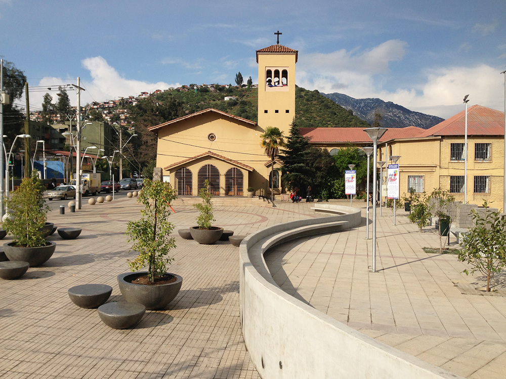

Multimedia Rena y BUchito Shunior
imagenes Tratando Estudiar
Manipulando a la pompa NiVEL D10S
Cumpleaños
| Dia |
Mes |
Año |
| 28 |
05 |
2010 |
| 27 |
10 |
2013 |
Descargar PDF
Descarga el PDF aquí
Insertar Imagen que ademas es enlace

Audio
Video Chan
Falta de Motivación Pincha este VIDEO Nerdo
Mapa donde están estas POMPAS